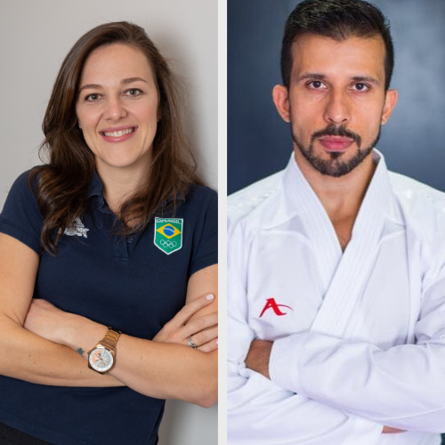

1° dia (19/08)
Experiência de atuação
multidisciplinar no esporte de alto rendimento
com Dra Charlini Hartz e Ariel Longo
450 vagas
Cursos
Convidados
19h00 às 20h30
Auditório Jamil Salomão
-
Dra. Charlini Hartz
- Graduação em Fisioterapia pela Universidade Metodista de Piracicaba (UNIMEP)
- Especialização em Fisioterapia Esportiva (UNIMEP)
- Sócia/Especialista Profissional em Fisioterapia Esportiva - Sociedade Nacional de Fisioterapia Esportiva e da atividade Física (SONAFE/COFFITO)
- Especialista Profissional em Osteopatia (COFFITO)
- Diplomada em Osteopatia - Colégio Brasileiro de Osteopatia (CBO)
- Mestre em Fisioterapia (UNIMEP)
- Doutora em Ciências do Movimento Humano (UNIMEP)
- Docente do Colégio Brasileiro de Osteopatia (CBO) e Docente em diversos cursos de Pós-Graduações na área de Fisioterapia do Esporte e Terapia manual.
- Coordenadora de Fisioterapia da Confederação Brasileira de Karate (CBK)
- Mais de 10 anos de experiência atuando com atletas de alto rendimento em diversas modalidades esportivas.
-
Ariel Longo
- Graduação em Educação Física UNIP
- Mestrado em Estudos Biodinâmicos da Educação Física USP
- Preparador Físico da Confederação Brasileira de Karate (CBK)
- Preparador Físico dos atletas olímpicos de Paris 2024 e Tóquio 2020
- Coordenador Técnico Jebs 2023/2024 Gymnasiade 2023

Relato de Experiência:
Natação Paralímpica: trajetória profissional da atleta Fabiana Sugimori
com Fabiana Sugimori
450 vagas
Cursos
Convidados
19h00 às 20h30
Auditório Jamil Salomão
- Bicampeã paralímpica: Sidney (2000) e Atenas (2004)
- 3º Lugar nas Olimpíadas de Beijing/China (2008)
Atuação interprofissional no cuidado ao idoso:
uma experiência no Japão
com Simone Thiemi Kishimoto
450 vagas
Cursos
Convidados
21h00 às 21h50
Auditório Jamil Salomão
- Graduação em Educação Física/Unicamp
- Especialista na área de "Envelhecimento e doenças articulares" (2016) e " Saúde Pública e envelhecimento" (2024) - Japan International Cooperation Agency/JICA/ Japão
- Mestre na área de educação para grupos especiais/Unicamp
- Doutora em Ciências Médicas/Unicamp

Formação de uma rede latino-americana para debates e construção acerca
dos guias alimentares
com Drª. Erika Marafon Rodrigues Ciacchi
100 vagas
Cursos
Convidados
19h00
Sala VIP - Palestra Online
- Graduação em Nutrição UNIMEP
- Mestrado em Enfermagem/FCM pela Universidade Estadual de Campinas, área de concentração "Trabalho, Saúde e Educação"
- Doutorado em Educação, área de concentração "Ensino e práticas culturais", no Laboratório de Práticas Educativas de Saúde/FE pela Universidade Estadual de Campinas
- Pós-Doutorado pela Università degli studi di Roma La Sapienza, Dipartimento di Psicologia Dinamica e Clinica
- Atualmente é professora, em exercício provisório, na Universidade Federal do Rio Grande do Norte (UFRN)
- Tem experiência na área de Nutrição e Saúde Coletiva, com ênfase em Educação Alimentar e Nutricional, Diabetes, Obesidade, Avaliação Nutricional, Nutrição em Saúde Coletiva, Comunicação, Educação e Promoção em Saúde e Segurança Alimentar e Nutricional
- Líder do grupo de pesquisa Apoio, Aprimoramento e Atualização em Educação Nutricional-A3EN
- Coordenadora do Centro-Latino Americano de Ciência e Tecnologia em Soberania, Segurança e Educação Alimentar e Nutricional na região Sul (Celassan)/Unila
2° dia (20/08)
Equoterapia em uma abordagem interdisciplinar
com Gabriel Fukamatsu, Vittória Sangalli, Maria Carolina e Mariana
Pereira
450 vagas
Cursos
Convidados
19h00 às 20h30
Auditório Jamil Salomão
-
Gabriel Issamu Fukamatsu
- Graduação em Fisioterapia (FAM)
- Formação nos métodos Therasuit e Estimulação Transcraniana por Corrente Contínua (ETCC)
- Atualmente trabalhando na Clínica Azultherapy com os métodos intensivos
- Voluntário há 12 anos na AEQUOTAM
-
Vittória Artuso Sangalli
- Graduação em Fisioterapia (PUC)
- Pós-graduação em Fisioterapia Traumato-Ortopédica e Esportiva pela (Inspirar)
- Atuando atualmente nas áreas ortopédicas e esportivas adulto e pediátrica
- Voluntária na AEQUOTAM há 4 anos
-
Maria Carolina De Nadai
- Graduação em Psicologia (PUC)
- Especialista em análise de comportamento e pós-graduação em Liderança e Gestão de pessoas
- Coordenadora de operações em empresa especializada em gestão de pessoas e recrutamento e seleção com foco no mercado de energia renovável
- Voluntária na AEQUOTAM há 7 anos
-
Mariana Pereira
- Graduação em Psicologia (FAM)
- Especialista em crianças e adolescentes, pós-graduada em Análise do comportamento ABA, Neuropsicologia e Psiquiatria da infância e adolescência pelo CBI of Miami
- Coordenadora técnica com foco em estratégias com crianças no atraso no Desenvolvimento global
- Voluntária na AEQUOTAM há 07 anos
O papel da nutrição na neurohabilitação
com Bruna Karoline da Silva Moraes
450 vagas
Cursos
Convidados
20h40 às 22h00
Auditório Jamil Salomão
- Graduação em Nutrição (UNICAMP)
- Há dez anos atuando na nutrição clínica hospitalar e ambulatorial em Campinas e região.
- No Hospital das Clínicas (HC/UNICAMP), atuou como aprimoranda em nutrição pediátrica e posteriormente como nutricionista residente em equipe multiprofissional com foco em saúde da criança e do adolescente.
- Como nutricionista clínica hospitalar, atuou durante três anos no setor de Equipe Multiprofissional de Terapia Nutricional (EMTN) na Fundação Centro Médico de Campinas.
- Posteriormente, trabalhou por dois anos no Hospital Estadual de Sumaré (HES) - UNICAMP.
- Concluiu em 2021 o Mestrado Profissional na área de Assistência ao Paciente Oncológico.
- Desde 2023, atua como nutricionista clínica ambulatorial em clínica de nutrição em Campinas (Espaço Nutrir), Clínica de neuroreabilitação em Valinhos (Intertherapy), e em ambulatório de nutrição do Hospital Madre Theodora.
3° dia (21/08)
Treinamento com Eletroestimulação
com Prof. Dr. Thiago Volpi e Jhenipher Moniky Rosolem
450 vagas
Cursos
Convidados
19h00 às 20h30
Auditório Jamil Salomão
-
Prof. Dr. Thiago Volpi
- Graduação em Educação Física
- Mestrado, Doutorado e Pós-Doutorado em Ciências do Movimento Humano
- Preparador físico em esportes individuais e coletivos
- Atualmente coordena uma equipe multidisciplinar – Treinamento e Saúde e atua como Professor Universitário de Graduação e Pós-Graduação
- Autor de 6 livros com participação na publicação de 62 artigos científicos, sendo 6 com eletroestimulação de corpo inteiro
- Sócio proprietário do Studio Volt - Eletroestimulação Muscular em Americana/SP
- Mentor científico dos nossos outros Studios com WB-EMS
- Coordenador do projeto "A ciência da eletromioestimulação de corpo inteiro (WB-EMS): da teoria à aplicação no treinamento", cujo objetivo é compartilhar resenhas de artigos e mentorias mensais na área
-
Jhenipher Moniky Rosolem
- Graduação em Educação Física
- Atua com treinamento físico personalizado com fins de desempenho e saúde. Mais de 60 clientes/alunos
- Sócia proprietária do Studio Volt - Eletroestimulação Muscular em Americana/SP
Apresentação dos projetos de extensão
com Coordenadores
450 vagas
Cursos
Convidados
20h40 às 22h00
Auditório Jamil Salomão
Curta se achou a pagina útil e acompanhe Info.FAM